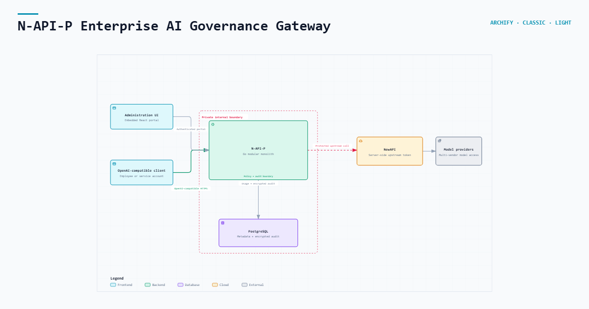

Identity and roles
Invite-only accounts, server-side sessions, role boundaries, sensitive-action reauthentication, and controlled recovery.
Open source · MIT License · Alpha
A self-hosted, OpenAI-compatible gateway that adds employee identity, downstream keys, model policy, cost attribution, encrypted audit, and operational visibility while keeping the upstream NewAPI credential on the server.
Primary request path
System boundary
N-API-P does not replace NewAPI or read its database. It creates a governed enterprise boundary through the upstream API contract.

Open interactive architecture diagramGovernance controls
Invite-only accounts, server-side sessions, role boundaries, sensitive-action reauthentication, and controlled recovery.
Personal API keys, team-owned service-account keys, hashed storage, revocation, and a permission-filtered model allowlist.
Upstream-reported token usage, immutable price snapshots, employee/team attribution, and explicit unknown values when usage is absent.
Application-encrypted request and response content, bounded retention, expiry, and purpose-bound administrator review.
New traffic is not forwarded when audit prerequisites are unavailable. The audit boundary remains part of the data path.
Content-free logs, Prometheus metrics, health endpoints, Docker health state, backup boundaries, and rollback documentation.
Synthetic demo
The demo generates local credentials and uses a NewAPI-compatible mock plus synthetic data.
git clone https://github.com/Nabr88887/N-API-P.git
cd N-API-P
.\local-demo\start.ps1Project status
N-API-P is intended for learning, research, evaluation, and controlled pilots. It has not been independently assessed for production use. See the repository security policy before exposing any deployment.